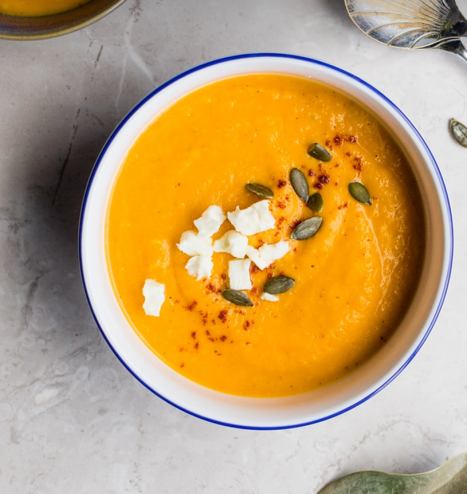

Thai Soup
Globally popular Tom Yum and Tom Kha soups are just 2 of the Thai soups that could fall into a few
categories - classic choices, Issan favourites, Southern delights, sour sensations, healthy options and
street food specials. A taste sensation loved by all walks of life from the unique Thai street food
culture and busy markets to the exquisite splendors of Thai fine dining, let us look at three of the
benefits, that make Thai soup so amazing and popular.

Salad
A salad is a dish consisting of mixed pieces of food, typically with at least one raw ingredient. It is
often dressed, and is typically served at room temperature or chilled, though some can be served warm.

Steak
A steak is a meat generally sliced across the muscle fibers, potentially including a bone. It is normally
grilled, though can also be pan-fried. It is often grilled in an attempt to replicate the flavor of
steak cooked over the glowing coals of an open fire.